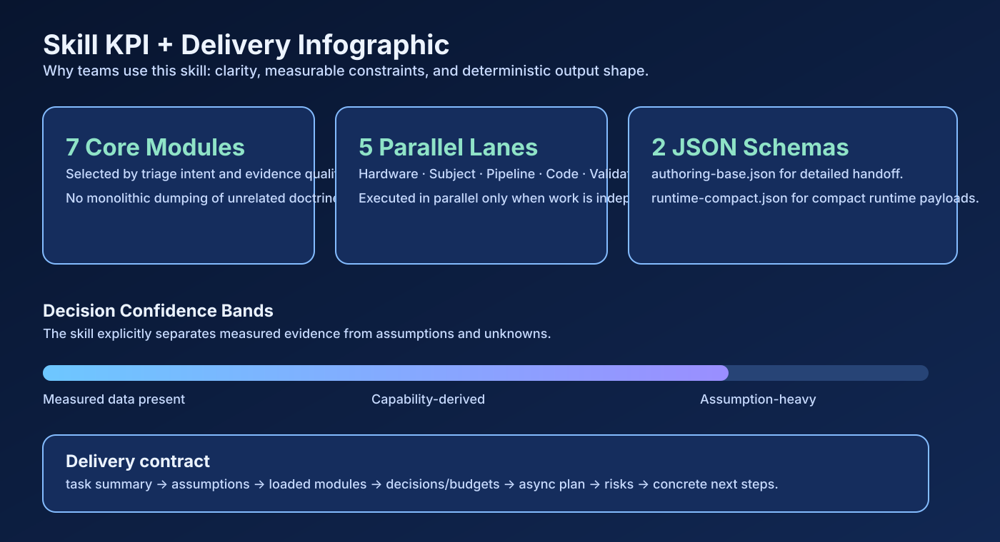

Triage first
Intent + constraints before advice
The orchestrator classifies task intent, artifacts, and hardware confidence before selecting deep modules.
WebGL 2.0 Skill System
A production-minded skill for architecture, debugging, performance optimization, and delivery validation. It routes from a tiny entrypoint into focused modules only when needed.
Triage first
The orchestrator classifies task intent, artifacts, and hardware confidence before selecting deep modules.
Capability aware
Recommendations include framerate/memory implications and failure modes instead of generic optimization slogans.
Reviewable output
Delivers consistent prose or JSON with assumptions, decisions, risk controls, and measurable next steps.
CI aligned
Validation tooling checks wrappers, schemas, examples, and anti-placeholder hygiene to keep the skill coherent.

